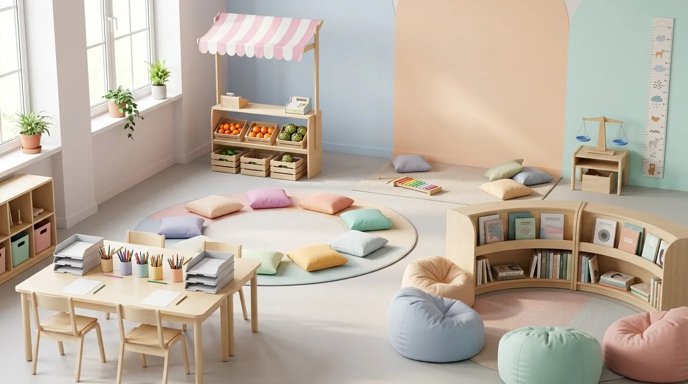

L'aula de 2n A, racó a racó
Una setmana de racons amb una sola meta: muntar la parada del mercat de dissabte. Cada racó fa una peça de veritat (els preus, el canvi, els cartells, els pesos, el pregó) i al final tot cap a la mateixa caixa.
Explora l'aula
Toca un racó del plànol, o recorre'ls amb el tabulador i prem Retorn. Amb Esc tornes a tota l'aula.
El fil conductor
Tots els racons treballen per a la parada
Cap racó és un exercici solt: el que es fa a cada un es necessita en un altre. Les fletxes discontínues són encàrrecs entre racons.
El material viu · Racó del mercat
La botiga: compra, paga i torna el canvi
Una parella fa de clienta i l'altra de botiguera. Tria el que compra la clienta, mira amb què paga i torna-li el canvi amb les monedes de la caixa.
Versió de la targeta
La parada
Tria un producte de la parada.
El canvi que tornes
Has posat 0 €La caixa
Monedes i bitllets dibuixats per a la mostra: són genèrics i no reprodueixen els dissenys oficials de l'euro.
Com roten els equips
Cinc equips, cinc racons, cinc dies
Cada dia cada equip és a un racó, i en una setmana passa per tots. La franja del taulell marca el racó guiat: allà hi seu la tutora. Cada equip el té guiat un dia diferent.
Dilluns
TLa tutora
Seu al racó guiat del dia. Presenta la tasca, fa preguntes i omple la graella d'aquell racó mentre observa.
SLa mestra de suport
Va al racó amb més lectura o escriptura autònoma aquell dia i després fa la volta. Si un dia no hi és, aquell racó fa servir la targeta V o LF.
Assemblea
Les dues adultes a la catifa: 5 minuts per començar (qui va on i què ha de portar) i 10 per tancar (què posem a la caixa del mercat).
Racó de la calma
No és ni premi ni càstig. Hi va qui ho necessita, amb el rellotge de sorra de 3 minuts, i torna sol al seu equip.
Penjades a cada racó
Les normes dels racons
Pictogrames dibuixats per a aquesta aula: el mateix dibuix a tots els racons, a l'alçada dels ulls de l'alumnat.
Fitxa del material
La setmana de racons, d'un cop d'ull
Objectiu
Preparar entre tot el grup la parada del mercat de dissabte (productes de temporada de les Terres de l'Ebre). Cada racó hi aporta una peça real i es fa servir de veritat el dissabte.
Durada
Una setmana: cinc sessions de 60 minuts, de dilluns a divendres a les 9:00. Cada sessió: 5 minuts d'assemblea, 45 de racó i 10 de tancament. Dissabte al matí, la parada al pati amb les famílies.
Criteris d'avaluació
- Matemàtiques. Resol situacions de compra i venda amb diners i troba el canvi; mesura i pesa triant la unitat i l'instrument, i compara els resultats.
- Llengua catalana. Juga amb rimes i síl·labes i diu un text oral breu amb ritme; escriu llistes i cartells amb una funció real; llegeix instruccions i les segueix en ordre.
- Competències transversals. Personal, social i d'aprendre a aprendre (demanar ajuda, regular-se, valorar la feina de l'equip) i ciutadana (decidir en assemblea respectant el torn).
Recursos
- Parada amb tendal, caixa registradora de joguina, monedes i bitllets de cartró.
- Balança de dos plats, pesos d'1 kg i mig kg, cinta mètrica, cinta a terra.
- Targetes de rimes, xilòfon, pandero; fulls de llista i cartolines.
- Receptes il·lustrades i instruccions de la biblioteca d'aula.
- Tauleta per a la botiga i per gravar el pregó.
Les quatre versions DUA de cada targeta
El repte del racó és el mateix per a tothom; canvia l'ajuda. Cada racó té la seva targeta de consigna en quatre versions, i l'equip la pot canviar a mitja sessió.
Com s'avalua
Avaluació formativa. La tutora observa el racó guiat amb una graella per equips (sense noms) i en tancar, cada equip explica què posa a la caixa del mercat. El dissabte mateix és la prova: la parada funciona?
